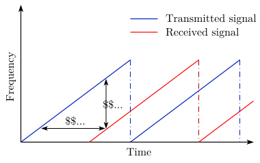
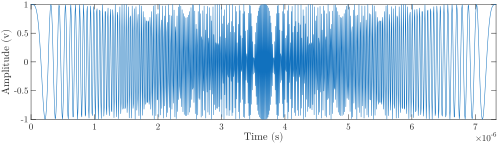
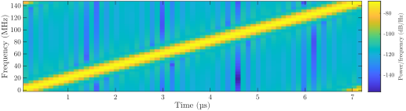
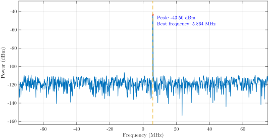
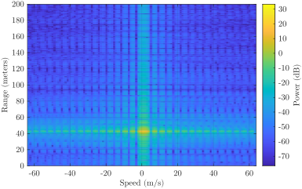
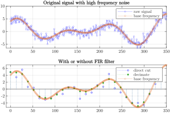
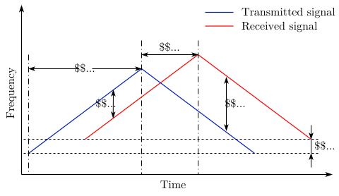
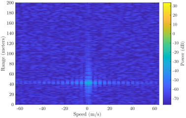

Intro
Automotive Adaptive Cruise Control (ACC) system with Frequency Moduled Continous Wave (FMCW). I found a matlab example performing range and Doppler estimation of a moving vehicle. Compared to pulsed radars, FMCW radars are smaller, use less power. As a consequence, FMCW radars can only monitor a much smaller distance. Note that the radar normally refers to the laser.
FMCW Waveform
An automotive Long Range Radar (LRR) system used for ACC constantly estimates the distance between the vehicle mounted on and the vehicle in front of it like .
fc = 77e9;
c = 3e8;
lambda = c/fc;range_max = 200;
tm = 5.5 * range2time(range_max, c);range2time represents:
The sweep bandwidth can be determined according to the range resolution and the sweep slope is calculated using sweep bandwidth and sweep time.
range_res = 1;
bw = rangeres2bw(range_res, c);
sweep_slope = bw/tm;rangeres2bw:
However, there's another way to handle this, I couldn't find the picture captured somewhere which records another explaination for the principle of the algorithm. It's sad because I kept it for a long time, but it fade away when I need it. Decide to leave this thing behind and wait it back on its own. While I still have a new one. We already have the flight time equation above. So for the rectangular pulse, the time can be considered as the inverse of the bandwidth , replace the time with $\displaystyle\frac{1}{bw}$ in , we get the same anwser as before.
-
Let's say we have linear increasing frequency $kt$, where the $\displaystyle k = \frac{B}{T}$ is the slope or gradient of the frequency change. Get the phase through intergal $\displaystyle\int_0^t kt\,dt = \frac{k t^2}{2} $. Transmission signal $\displaystyle\sin\left(\frac{k t^2}{2} \right)$ it is. Mix that with the recieved one, which delays $\tau$, $\displaystyle \sin \left(\frac {k}{2}\cdot (t-\tau)^2 \right)$. Simply multiply them together
Get the Beat Frequency $k\tau $ now using a low-pass filter. It means that no matter how high the original signal frequency is, only twice the low beat frequency we will use to sample the recieved signal. It's worth mentioning that in practice, the sensor gets no signal or noise rather than the delay one of the transmitted signal at the first, obviously. But once receiving the signal, there's no difference directly mix the signals.
I get a reflect here. Is it necessary to set the first few sample value to zero while no signal is detected in simulation.
-
Another solution is complex sampling. This way can make us use the same sample rate as the bandwidth. Actually you see the formula is becoming diffcult enough for theory explaination, even without a phase bias $\phi$. However using the complex signal $e^{-j\omega t}$ is much easier than the real signal. According to the wiki stuff, complex sampling (i.e. I/Q sampling, or 正交采样 in Chinese) use the complex numbers to decompose the signal. We already have the knowledge that general signals we use in real world, are in real number field, which can be decomposed to exponential form, like
- The $\omega_{signal}$ here is the angular frequency of the signal we want to sample.
- $c_n$ the coefficient above is a complex number, it'll be real number in the trigonometric form of Fourier series.
range2beat is used to calculate the beat frequency of the range.
fr_max = range2beat(range_max, sweep_slope, c);Why would I use
Presume that the maximum speed of the car is about $230 \mathrm{km/h}$. The maximum Doppler shift and the maximum beat frequency can be computed as
range2beat if I've already get the range value. Or why do I care the beat frequency if the distance is known.v_max = 230*1000/3600;
fd_max = speed2dop(2*v_max, lambda);
fb_max = fr_max + fd_max;speed2dop explained here. Consider the transmitter the exact same place as the reciever, we can compute the Doppler shift of a target relative to a receiver
See that this math is easy. The velocity $v$ defines the radial velocity of the source relative to the receiver, devided by the carrier wavelength to obtain the Doppler shift $\Delta f$ in hertz. In this example, twice the maximum beat frequency and the bandwidth is adopts as sample rate.
fs = max(2*fb_max, bw);Noticed that the frequency here hits the gigahertz range, while the ultrasound trasmitter rarely reaches this level. The accuracy and the reliability of this approach should be doubted for a second.
| System parameters | Value |
|---|---|
| Operating frequency (GHz) | 77 |
| Maximum target range (m) | 200 |
| Range resolution (m) | 1 |
| Maximum target speed (km/h) | 230 |
| Sweep time (microseconds) | 7.33 |
| Sweep bandwidth (MHz) | 150 |
| Maximum beat frequency | 27.30 |
| Sample rate (MHz) | 150 |
waveform = phased.FMCWWaveform('SweepTime', tm, 'SweepBandwidth', bw, 'SampleRate', fs);

Phased array system toolbox
Followed contents go unrelated with FMCW but the radar or phased array numerical simulation for quick algorithm verification. This experiment assumes a moving car. Compute the radar cross section of a car, based on the distance between the radar and the target car.car_dist = 43;
car_speed = 96*1000/3600;
car_rcs = db2pow(min(10*log10(car_dist)+5, 20));
cartarget = phased.RadarTarget('MeanRCS', car_rcs, 'PropagationSpeed', c, 'OperatingFrequency', fc);
carmotion = phased.Platform('InitialPosition', [car_dist;0;0.5], 'Velocity', [car_speed;0;0]);db2pow:
It's convenient that apply PAST for phased array algorithm verification, which is not the main point of this article. Next we focus on the two-ray propagation in reality. Here we can define an analyzer
specanalyzer = spectrumAnalyzer('SampleRate', fs, 'Method', 'welch', 'AveragingMethod', 'running', 'PlotAsTwoSidedSpectrum', true, 'FrequencyResolutionMethod', 'rbw', 'Title', 'Spectrum for received and dechirped signal', 'ShowLegend', true);rng(2012);
Nsweep = 64;
xr = complex(zeros(waveform.SampleRate*waveform.SweepTime, Nsweep));
for m = 1:Nsweep
% Update radar and target positions
[radar_pos, radar_vel] = radarmotion(waveform.SweepTime);
[tgt_pos, tgt_vel] = carmotion(waveform.SweepTime);
% Transmit FMCW waveform
sig = waveform();
txsig = transmitter(sig);
% Propagate the signal and reflect off the target
txsig = channel(txsig, radar_pos, tgt_pos, radar_vel, tgt_vel);
txsig = cartarget(txsig);
% Dechirp the received radar return
rxsig = receiver(txsig);
dechirpsig = dechirp(txsig, sig);
% Visualize the spectrum
specanalyzer(dechirpsig);
xr(:, m) = dechirpsig;
endFirstly, these codes are shown here because I'm dumb at the coding, the functions here are actually the object in Matlab,
transmitter, cartarget, receiver, etc. They use the PAST, the object instantiates a class, which has some benefits, replaces the middle variable for instance. And the dechirp(txsig, sig) here is just sig .* conj(txsig). Sadly it does no help with the difficult part. Some observation recorded here. The object can be replaced with step function. For example, txsig = channel(txsig, radar_pos, tgt_pos, radar_vel, tgt_vel) has the exact same result with txsig = step(channel, txsig, radar_pos, tgt_pos, radar_vel, tgt_vel). And never forget this is numerical simulation, with some important parameters. The spectrumAnalyzer visualizes the signal's spectrum. But it's useless if we can't figure out the specific number during the range detection.The spectrum here is actually not export from the built-in spectrumAnalyzer function since it's horrible. I use the pwelch function instead to extract the spectrum of dechirpsig data and draw it manually by using the RBW(Resolution BandWidth) parameter listed under the matlab result. Compared with the Matlab official tutorial, the spectrum here misses the received one(channel 1) due to my lack of capacity. Worth to mention the convertion of the power in watts between dBW and dBm: $P_{dBm} = 10\log_{10}(P_{dBW}/10^{-3})${kind=link}

rngdopresp = phased.RangeDopplerResponse('PropagationSpeed', c, 'DopplerOutput', 'Speed', 'OperatingFrequency', fc, 'SampleRate', fs, 'RangeMethod', 'FFT', 'SweepSlope', sweep_slope, 'RangeFFTLengthSource', 'Property', 'RangeFFTLength', 2048, 'DopplerFFTLengthSource', 'Property', 'DopplerFFTLength', 256);
clf;
plotResponse(rngdopresp, xr); % Plot range Doppler map
axis([-v_max v_max 0 range_max])
clim to preserve the color limit of the colobar range, and restore it to keep the same colorbar in by clim(climVals) . Demonstrated in the , it's clear that the car in whose velocity is nearly zero in front is a bit more than $40\,\mathrm{m}$ away the back one. This is expected in this simulation example cause the radial speed of the car relative to the radar is merely around $1.11\,\mathrm{m/s}$. There are many ways to estimate the range and speed of the target car. In this example, the root MUSIC algorithm is used to extract both the beat frequency and the Doppler shift. The Multiple Signal Classification (MUSIC) algorithm estimates the pseudospectrum from a signal or a correlation matrix using Schmidt's eigenspace analysis method. The algorithm performs eigenspace analysis of the signal's correlation matrix to estimate the signal's frequency content. It's particularly suitable for signals that are the sum of sinusoids with additive white Gaussian noise. The algorithm is a high-resolution spectrum estimation method based on eigenstructure. Its core lies in decomposing the covariance matrix of observational data into two orthogonal subsapces, the signal subspace and the noise subspace. Image the raw data $X(t)$ consists of the narrowband signal sources $S(t)$ times by the array manifold matrix $A$ plus noise $N(t)$ received by the sensor array, i.e. $X(t) = AS(t)+N(t)$. $A$ contains direction and frequency information. Now for the math, compute the covariance between the whole array signals $\mathrm{Var}(X) = E(XX^H)$. Similarly, the covariance matrix $\mathrm{Var}(X)$ can be written as $A\mathrm{Var}(echo)A^H +\sigma^2I$, where $\mathrm{Var}(echo)$ is the covariance matrix of the pure echo signal without the noise.
Some prerequisites are necessary here:
Based on the covariance model of the sensor data $\mathrm{Var}(X)$, we perform an eigenvalue decomposition of it. The first $p$ larger eigenvalues correspond to the signal vector. Their corresponding eigenvectors tensor into the signal subspace. And the remaining $N-p$ smaller eigenvalues(theoretically equal and corresponding to the noise power $\sigma$). Their corresponding eigenvectors span the noise subspace, which is practically the zero space, the main proof of the orthogonality it is. According to the definition of the eigenvalue and eigenvector:
$A$ is column full-rank, and $\mathrm{Var}(signal)$ is full-rank, hence $A^H x_{noise} = O$ result the orthogonality. Due to it, the inner product of any vector in the signal subspace with any vector in the noise subspace is theoretically zero. Nevertheless, the results of the inner product calculation are hardly precise as theoretical model. Various errors cause the value to change from zero to an extremely small one. Hence it makes $P_{MUSIC}(f)$, the reciprocal of the inner product between the steering vector $e(f)$ aligned with the signal and the noise vector, become an outstanding peak in the frequency domain.
- The signal is uncorrelated with the noise, which means the covariance between them is zero.
- All noises follow the normal distribution, thus the variance of each noise is $\sigma^2$.
- The noise from each sensor is uncorrelated, hence the covariance between every two noise is zero.
- If the dimension of the signal subspace is smaller than the dimension of the noise subspace, the MUSIC pseudospectrum estimate is given by where $p$ is the dimension of the signal subspace and $v_k$ is the $k$th eigenvector of the correlation matrix. The eigenvectors used in the sum correspond to the largest eigenvalues and span the signal subspace. Since Matlab here normalizes all vectors, i.e., the sum of the second-paradigm numbers of all eigenvectors and steering vectors $\displaystyle \sum_{k=1}^N\left|\upsilon_k^H e(f)\right|^2 = 1$. Here's the trick for quickly calculating the pseudospectrum by subtracting 1.
- Oppositely, if the dimension of the noise subspace is smaller than the dimension of the signal subspace, the MUSIC pseudospectrum estimate is given by where $N$ is the dimension of the signal subspace plus the dimension of the noise subspace and $\upsilon_k$ is the $k$th eigenvector of the correlation matrix. The eigenvectors used in the sum correspond to the smallest eigenvalues and span the noise subspace.
The MUSIC algorithm use by
rootmusic is the same as that used by pmusic . rootmusic is most useful for frequency estimation of signals made up of a sum of sinusoids embedded in additive white Gaussian noise. The algorithm performs eigenspace analysis of the signal's correlation matrix in order to estimate the signal's frequency content. The difference between pmusic and rootmusic is:
pmusicreturns the pseudospectrum at all frequency samples.rootmusicreturns the estimated discrete frequency spectrum, along with the corresponding signal power estimates.
Dn = fix(fs/(2*fb_max));
for m = size(xr, 2):-1:1
xr_d(:, m) = decimate(xr(:, m), Dn, 'FIR');
end
fs_d = fs/Dn;Benefits from the I/Q sampling, while the received signal is sampled at $150\,\mathrm{MHz}$ which is the Nyquist rate, after the dechirp, we entail only sample at a rate that corresponds to the maximum beat frequency. The signal can be decimated to alleviate the hardware cost.
Function decimate reduces the original sample rate of a sequence to a lower rate. It creates a lowpass filter, and uses fir1 to design a filter with cutoff fequency $\displaystyle\frac{1}{r}$ when the fir option is chosen. In the IIR case, decimate applies the filter in the forward and reverse direction using filtfilt to remove phase distortion. In effect, this process doubles the filter order. In both cases, the function minimizes transient effects at both ends of the signal by matching endpoint conditions. Finally decimate resample like an regular piece cutting.
We may wonder why there exists a lowpass filter. Imagine that directly draw from the data will honestly pick up every
To estimate the range, firstly, estimate the beat frequency using the coherently integrated sweeps and then converted to the range.
r th point from the interior of the raw data, including the potential noise. So it's obviously better to add a filter here. What's interesting is the chebyshev filter makes the original and decimated signals have matching last elements. While the FIR one match the first elements.

fb_rng = rootmusic(pulsint(xr_d, 'coherent'), 1, fs_d);
rng_est = beat2range(fb_rng, sweep_slope, c);
peak_loc = val2ind(rng_est, c/(fs_d*2));
fd = -rootmusic(xr_d(peak_loc, :), 1, 1/tm);
v_est = dop2speed(fd, lambda)/2;
Set the waveform to use triangular sweep by
waveform_tr.SweepDirection = 'Triangle';Nsweep = 16;
xr = helperFMCWSimulate(Nsweep, waveform_tr, radarmotion, carmotion, transmitter, channel, cartarget, receiver);fbu_rng = rootmusic(pulsint(xr(:, 1:2:end), 'coherent'), 1, fs);
fbd_rng = rootmusic(pulsint(xr(:, 2:2:end), 'coherent'), 1, fs);rng_est = beat2range([fbu_rng fbd_rng], sweep_slope, c);fd = -(fbu_rng+fbd_rng)/2;
v_est = dop2speed(fd,lambda)/2;Two-ray Propagation
In reality, the actual signal propagation between the radar and the target vehicle is more complicated than what is modeled before. The wave can also arrive at the target vehicle via reflections. A simple yet widely used model to describe such a multipath scenario is two-ray model, where the signal propagates from the radar to the target vehicle via just two paths, one direct path and one reflected path off the road, as shown in the .
txchannel = twoRayChannel('PropagationSpeed', c, 'OperatingFrequency', fc, 'SampleRate', fs);
rxchannel = twoRayChannel('PropagationSpeed', c, 'OperatingFrequency', fc, 'SampleRate', fs);
Nsweep = 64;
xr = helperFMCWTwoRaySimulate(Nsweep, waveform, radarmotion, carmotion, transmitter, txchannel, rxchannel, cartarget, receiver);
plotResponse(rngdopresp,xr); % Plot range Doppler map
axis([-v_max v_max 0 range_max]);
clim(climVals);